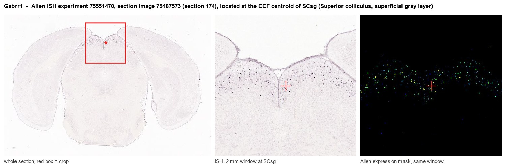
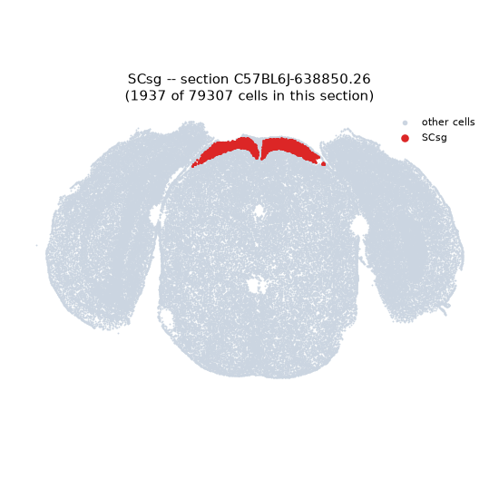
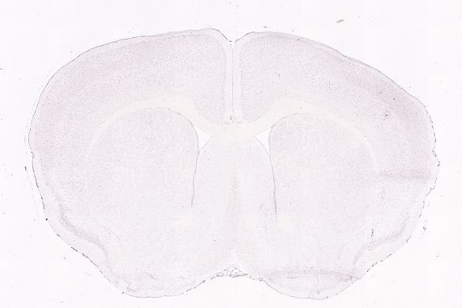
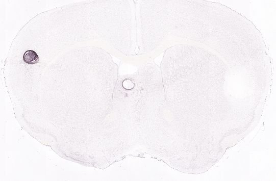
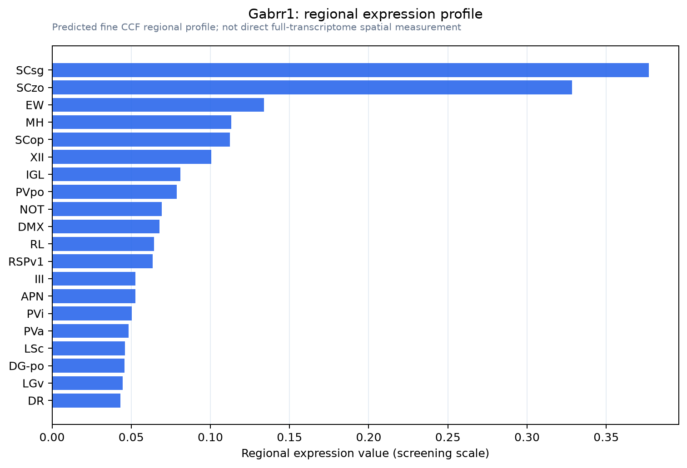

Gabrr1
Gamma-aminobutyric acid receptor subunit rho-1 (GABA(A) receptor subunit rho-1) (GABAAR subunit rho-1) (GABA(C) receptor)
Spatial tier: STRICT_EXCLUSIVE · Class: ION_CHANNEL · Top region: SCsg (Superior colliculus, superficial gray layer) · Positive regions: 6/554
Function in SCsg: evidence, prediction, innovation
- Gene function
- Gabrr1 encodes the rho-1 subunit of ionotropic GABA receptors ('GABA-C'). These pentameric chloride channels are bicuculline-insensitive, blocked by TPMPA and picrotoxin, and give small, slowly desensitizing, long-lasting currents; rho1 dominates in retinal bipolar terminals and superficial superior colliculus.
- Region function
- The superficial gray layer receives direct retinal and visual-cortical input and starts a retinotopic map driving orienting, saccades, defensive and prey-approach behaviour.
- Published in this region
- direct SGS concentrates midbrain rho expression (Wegelius 1998; Boller & Schmidt 2003); there GABA-C activation lowers excitability opposite to GABA-A and adds to IPSCs (Pasternack 1999), and most rho-expressing SGS cells are GABAergic interneurons, so it acts partly by disinhibition (Grabert 2009). Rho1/rho2 mRNA is developmentally regulated by Ca2+ channels, neurotrophins and GABA-C activity (Jost 2006). Gabrr1 knockouts show shorter but not abolished SGS GABA-C IPSCs, unlike retina, indicating rho2/rho3 compensation (Schlicker 2009).
- Predicted function
- Prediction: rho1 receptors on SGS GABAergic interneurons give slow tonic-like inhibition gating disinhibition of projection neurons, so loss should broaden receptive fields and shift saccade and looming-defence thresholds. TPMPA or conditional deletion should raise visual gain, with mild phenotypes because rho2 compensates.
- Innovation
- ★★☆☆☆ 2/5 GABA-C receptors in SGS are studied anatomically, pharmacologically and with a rho1 knockout, but behavioural roles remain untested.
- Tools
- Gabrr1 knockout mouse (McCall 2002; Schlicker 2009); antagonist TPMPA, agonist CACA, blocker picrotoxin; rho1 antibodies used in retina/SC; no Cre/Flp driver known.
- References
Direct evidence located at the region

Allen ISH experiment 75551470, section image 75487573 (section 174): the section that contains the CCF centroid of Superior colliculus, superficial gray layer according to the Allen image-to-atlas alignment (reference_to_image), with a 2 mm window around that point. Left: whole section, red box = window. Middle: ISH signal. Right: Allen's expression-mask view of the same window. open this image in the Allen viewer
Direct spatial evidence



Regional expression figure

Predicted WMB × fine-CCF profile; not direct full-transcriptome spatial measurement.
Spatial profile
Evidence and specificity
- Evidence status
- PREDICTED_FINE
- Direct sources
- None; predicted localization only
- Exclusive threshold
- 12 positive regions out of 554
- Spatial specificity
- 0.392
- Top-region fraction
- 0.142
- Filter status
- PASS
Interpretation limits
- Cell-type-to-region projection is imputed expression, not direct spatial measurement.
- Adult reference atlases do not establish stability across age, sex, strain, state, or disease.
- Transcript abundance does not guarantee protein abundance or genetic-tool performance.